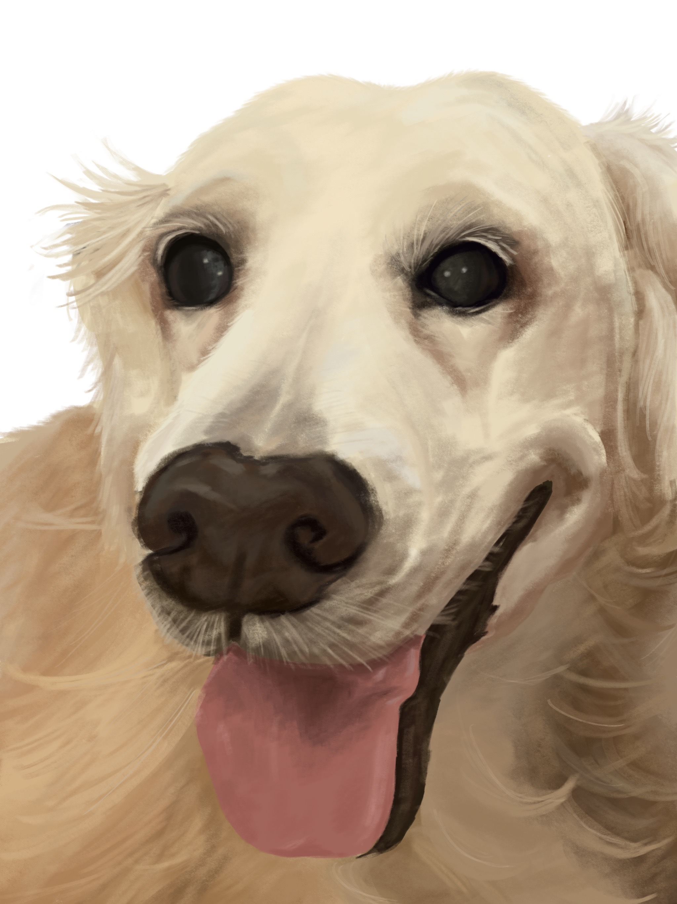

Drawing is something I only really got into after graduating high school. Since my first semester at UH was during Covid-19 and I couldn’t do anything in person, drawing became a hobby that sort of stemmed from buying an iPad for college and not having much to do with it! I started like how I imagine most manga fans start drawing, with fan art of some of my favorite characters. But after realizing I was BAD at that style, I turned towards taking inspiration from real pictures and using those for my projects.
I was using Pinterest for my main inspiration and drawing people and cool compositions I found there, but later in the year when my grandparents dog passed away, I wanted to do something special for them to remember her by. Miso was a dog I grew up with my whole life so this was the first art project I did that carried a lot of meaning in it personally.
I found the best way to go about pieces like this digitally is to start with really simple blob shapes and sort of add details from there. I think there are still a lot of areas I can clean up and improve on but I was really happy with the results and so was my family!